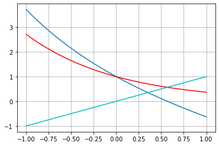

10. Método da Iteração Linear (Ponto Fixo)#
Este notebook explora aspectos do método da iteração linear, ou também chamado de método do ponto fixo.
import numpy as np
import matplotlib.pyplot as plt
10.1. Exemplo#
Estudamos a função \(f(x) = x^2 + x - 6\).
x = np.linspace(-4,4,50)
f = lambda x: x**2 + x - 6
xr = np.roots([1,1,-6])
print('Raízes: x1 = {:f}, x2 = {:f}'.format(xr[0], xr[1]))
# função de iteração
g1 = lambda x: 6 - x**2
plt.plot(x,f(x),label='$f(x)$');
plt.plot(x,x,'k--',label='$y=x$');
plt.plot(x,0*x,'c-.',label='$y=0$');
plt.plot(x,g1(x),'r--',label='$g_1(x)$');
plt.axvline(-3,-5,10,color='m');
plt.axvline(2,-5,10,color='m');
plt.legend(loc='best');
Raízes: x1 = -3.000000, x2 = 2.000000
10.2. Exemplo#
Estudamos a função \(f(x) = \exp(x) -x\)
x2 = np.linspace(-1,1,50)
f2 = lambda x: np.exp(-x) - x
g2 = lambda x: np.exp(-x)
plt.plot(x2,f2(x2),x2,g2(x2),'r',x2,x2,'c')
plt.grid(True)

10.3. Implementação do método do ponto fixo#
def ponto_fixo(x0,f,g,tol,N,vis):
"""
Resolve problema de determinacao de raizes pelo
metodo do ponto fixo (iteracao linear).
entrada:
x0 - aproximacao inicial (float)
f - funcao a ser resolvida (str)
g - funcao de iteracao (str)
tol - tolerancia (float)
N - numero maximo de iteracoes (int)
vis - flag para plotagem (bool)
saida:
x - raiz aproximada para f (float)
"""
from numpy import linspace
from matplotlib.pyplot import plot,legend
# funcoes
f = eval('lambda x:' + f)
g = eval('lambda x:' + g)
# inicializacao
it = 0 # contador
x, xn = x0, x0 + 1 # iteradas atual, anterior
e = abs(x-xn)/abs(x) # erro
# tabela
print('i\t x\t\t f(x)\t\t ER')
print('{0:d}\t {1:f}\t {2:f}\t {3:e}'.format(it,x,f(x),e))
# laco
while e >= tol and it <= N:
it += 1
xn = x
x = g(xn)
e = abs(x-xn)/abs(x)
print('{0:d}\t {1:f}\t {2:f}\t {3:e}'.format(it,x,f(x),e))
if it > N:
print('Solução nao alcancada com N iteracoes.')
break
if vis == True:
dx = 2*x
dom = linspace(x - dx,x + dx,30)
plot(dom,f(dom),label='$f(x)$')
plot(dom,dom*0,label='$y=0$')
plot(dom,g(dom),label='$g(x)$')
plot(dom,dom,label='$y=x$')
legend()
return x
10.4. Estudo de caso: \(f(x) = x^2 + x - 6\)#
Função de iteração: \(g(x) = \sqrt{6 - x}\)
f = 'x**2 + x - 6'
g = '(6 - x)**(1/2)'
x0 = 0.1
tol = 1e-5
N = 100
ponto_fixo(x0,f,g,tol,N,True)
i x f(x) ER
0 0.100000 -5.890000 1.000000e+01
1 2.428992 2.328992 9.588307e-01
2 1.889711 -0.539280 2.853771e-01
3 2.027385 0.137674 6.790695e-02
4 1.993142 -0.034243 1.718024e-02
5 2.001714 0.008572 4.282174e-03
6 1.999572 -0.002142 1.071346e-03
7 2.000107 0.000536 2.677864e-04
8 1.999973 -0.000134 6.694973e-05
9 2.000007 0.000033 1.673724e-05
10 1.999998 -0.000008 4.184321e-06
1.9999983262723453
Função de iteração: \(g(x) = -\sqrt{6 - x}\)
f = 'x**2 + x - 6'
g = '-(6 - x)**(1/2)'
x0 = 0.1
tol = 1e-5
N = 100
ponto_fixo(x0,f,g,tol,N,True)
i x f(x) ER
0 0.100000 -5.890000 1.000000e+01
1 -2.428992 -2.528992 1.041169e+00
2 -2.903273 -0.474281 1.633608e-01
3 -2.983835 -0.080563 2.699970e-02
4 -2.997305 -0.013469 4.493853e-03
5 -2.999551 -0.002246 7.488072e-04
6 -2.999925 -0.000374 1.247965e-04
7 -2.999988 -0.000062 2.079929e-05
8 -2.999998 -0.000010 3.466545e-06
-2.9999979200736955